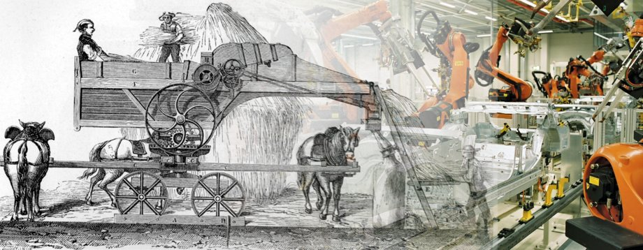

Tecnologia Industrial

La utilització de la tècnica ha estat una constant de l’ésser humà des de la seva aparició sobre la terra; la missió que compleix aquesta recerca és doble: d’una banda es tracta d’evitar o almenys disminuir al màxim tots aquells treballs laboriosos, pesats i perillosos, i per una altra dominar tots aquells treballs repetitius.
Constitueix un camp d’activitat fruit de les relacions entre la ciència i la tècnica. És el resultat d’una intersecció entre l’activitat investigadora, que proporciona coneixements aplicables i criteris per millorar els resultats de la intervenció sobre el medi material, i la tècnica, que aporta experiència operativa acumulada i coneixements empírics procedents de la tradició i del treball.